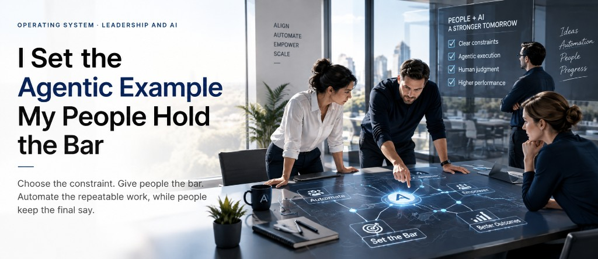

AI is part of how I do the work.
I use it as a thought partner, build with OpenAI models, and help people make agents part of their daily workflows. Judgment and accountability stay with us.

Adoption in practice
Seven people. Six weeks. Part of the working day.
At G2i, I asked our seven-person GTM team to use an agentic assistant every day. Within six weeks, the whole team was using Codex or Claude in their workflows.
We connected assistants to Salesforce, Gmail, Slack, and Google Drive. Sales used call transcripts to update records and prepare handoffs. Marketing used AI to develop and iterate on content. The useful work gave people a reason to keep using it.
The change was in how we worked. People could ask their assistant to use connected context and carry out tasks, then review the result.
The rules
AI helps me think better, then do more.
Start with the right question.
Get clear on the decision before asking AI for an answer.
Give it the context.
Situation, people, outcome, constraints, and a role that fits the problem.
Ask it to interview me.
Questions one at a time, before a recommendation. The interview shows what I left out.
Challenge my thinking.
Test the assumption, find the weak argument, make the case for another path.
Turn insight into action.
A specific task, a definition of good, then I review against the outcome.
Own the decision.
Define what the agent can do, when it must ask, and who owns the result.
Influenced by Geoff Woods’ The AI-Driven Leader.
The operating circuit
A four-stage operating circuit. Diagnose the constraint, architect the system, automate the repeatable work, then compound the result into the next cycle. Human judgment stays on the decision. Repeatable work moves around the loop.
A recurring OpenAI agent
A family task, carried through to reimbursement.
I built an insurance-claims agent using OpenAI models. It now runs through Dots, monitors for new documentation, reads the documents, and submits claims for our out-of-pocket expenses.
It checks whether a claim has already been submitted and whether the required information is present. If something is missing or unclear, it pauses and messages me for clarification.
The first batch submitted 27 claims and resulted in approximately $3,500 in reimbursements within a week. It continues to monitor and file as new documents arrive.
This is a personal workflow. The useful lesson is deciding what the agent can handle and when it needs a person.
The fleet
An agentic GTM brain built by agents and executed by humans.
Reporting and pipeline, chief-of-staff duties, marketing drafts, wikis, dashboards, the revenue brain. Each agent is its own service with its own tests. Every send waits at a human gate.
Outputs included: Quarterly Rocks Dashboard, Essentialism Planning, GTM wikis that powered social media posts, and a customer graph built from connected systems data.
Revenue Brain
Business signals from CRM, calls, email, Slack or Teams, documents, social, and product telemetry enter the Revenue Brain. Synthesis, extraction, and matching happen in the hub. Human review gates and an oversight layer sit on the work. Outputs are pipeline, content, and reporting.